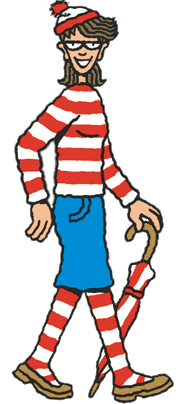
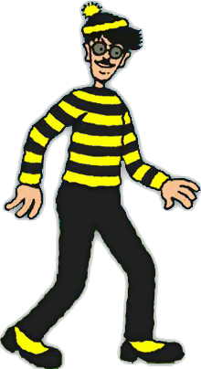

《Where's Wally》
是一套由英國插畫家Martin Handford所創作的一系列複雜的全頁繪圖冊。
圖中有上百個人在做各種不同的事情。
本書的目標就是在一張人山人海的圖片中找出威利，
並且幫助他尋找他的朋友以及弄丟的東西。
Martin Handford在1987年出版了最初的英國版本，並將角色取名為"Wally"。
《Where's Wally》的商標在28個國家都已經進行了註冊，
為了便於進行語言翻譯，每一國家都會授予威利一個新名字和個性描述。
在法國，他的名字變成了"Charlie" ;
德國是"Walter" ; 丹麥是"Holger" ;
斯里蘭卡是"Hetti" ; 挪威是"Willy" 。
在以色列，威利的名字則變成了"Effy" 。
而其中最成功的版本是北美的《Where's Waldo?》，
這個版本甚至超越了原有的「Wally」品牌。
由於早期的美版都是與英版同步發行，
而美國版本除了進行改編，還增加了Waldo的授權，包括了視頻遊戲、周邊書刊、雜誌、玩偶、玩具以及電視劇。
導致「Wally」的品牌被「Waldo」的巨大成功而淹沒。
「Waldo」的產品後來甚至被重新製作並翻譯到其它國家市場，
其中也不乏有將「Waldo」創作的產品改為「Wally」的版本。
雖然「Wally」是第一個被使用的名稱，
但作者和他的出版商在公開場合中都將角色和授權稱為「Waldo」。
本書的主角。
其名字以及角色特性針對某些國際版本進行了在地化。
在前兩本書中，Wally獨自徘徊，是每個插圖中唯一可以找到的人。
威利的朋友。
在《Where's Waldo: The Magnificent Poster Book》中首次出場。
她有一個雙胞胎姐妹葳瑪（Wilma），但未出現在後面出版的書籍中。

威利的主要敵人。
首次出現在《Where's Waldo: The Magnificent Poster Book》。
他的名字是威利的美國名字"Waldo"逆序拼寫的結果。
他的外觀和威利幾乎是一樣的，但衣服是黃黑條紋是的而不是紅白相間，眼鏡為淺藍色且有八字鬍。
威利的狗。
首次出現在《The Ultimate Fun Book》。
在這裡它是Wilma的狗。
讀者只能在《Where's Waldo: The Wonder Book》看到完整的Woof。
被譽為比威利更難找的人物。

首次出現在《The Fantastic Journey》。
在第一次出現時，他接受了威利關於尋找身世真相的請求，
從此便出現在威利的旅途之中。
他們的人數有很多，並且穿著打扮與威利十分相似。
其中的25個經常伴隨威利出現。
他們首次出現在《The Ultimate Fun Book》。
傳說在1987年以前，英國有一名連續殺人魔，專挑小孩下手。
他連續殺害了25個小孩，犯案手法相當殘忍，且很會躲藏。
警方花了很久的時間才逮到嫌犯，但這名殺人魔被診斷為精神異常，
因而關進精神病院中。
不料，殺人魔數年後從醫院裡逃跑，再度被通緝，
卻從此消失無蹤，沒有人抓到他。
這名殺人魔脫逃不久後，《威利在哪裡？》的繪本就上市了。
據傳威利穿的紅白條紋衣服，就是他在精神病院時所穿的病人服。
而帽子、眼鏡和枴杖等，是他的變裝工具 ;
滿身的生活用品和裝備，則是他逃亡的必需品。
為了掩藏威利，繪本中有專門掩護他的護衛隊。
而這護衛隊的人數剛好和威利所殺的兒童數目一樣，皆是25人。
雖然威利是殺人魔的說法有待商榷，
這本繪本的意義，許是要用來提醒家長和孩子，
要隨時提防身邊的人，因為罪犯可能就在周遭。